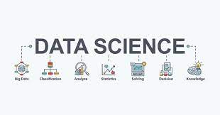

Computer science is the study of computers and computational systems. It is a broad field which includes everything from the algorithms that make up software to how software interacts with hardware to how well software is developed and designed.Computer Science has many fields.

Web development refers to the process of creating websites, web applications, and other web-based software using programming languages such as HTML, CSS, and JavaScriptClick on the image for more details
Data science is the practice of using statistical and computational techniques to extract insights and knowledge from data.Click on the image for more details
Ethical hacking is the process of identifying and exploiting vulnerabilities in computer systems and networks with the permission of their owners, in order to improve their security.Click on the image for more details
The most important aspect of computer science is problem solving, an essential skill for life. Students study the design, development and analysis of software and hardware used to solve problems in a variety of business, scientific and social contexts.